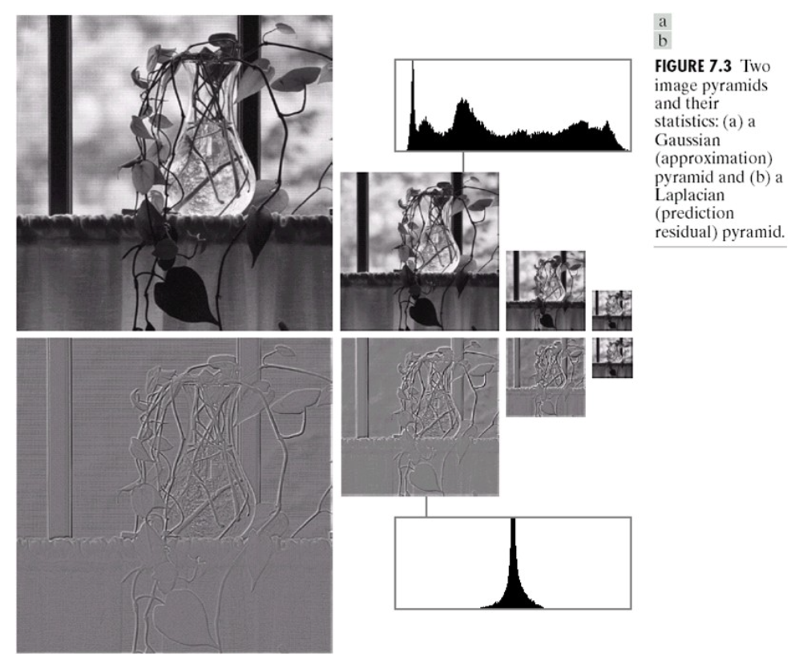
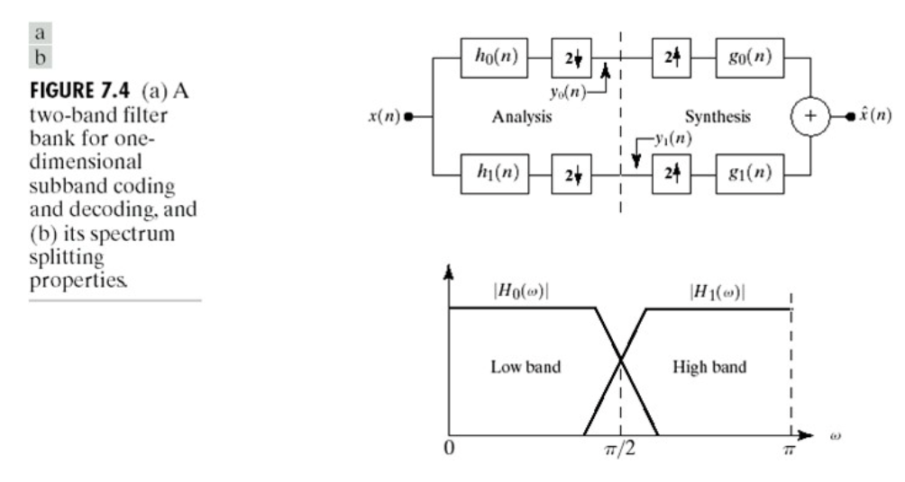
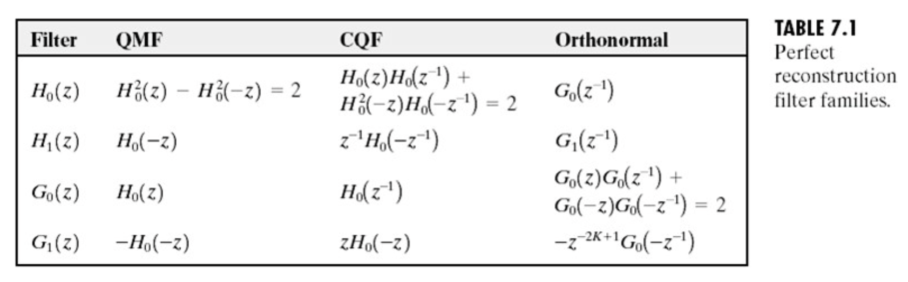
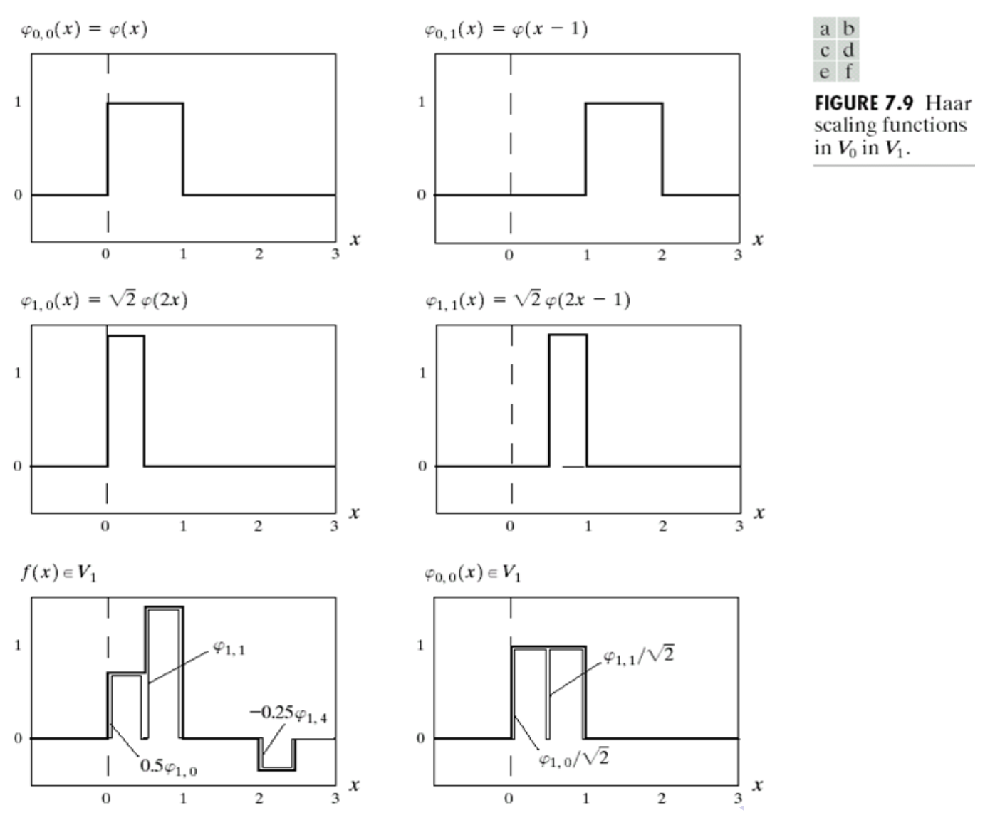

[图像处理]小波变换和多分辨率处理
背景
图像金字塔

子带编码
在子带编码中，一幅图像被分解成为一系列限带分量的集合，称为子带，它们可以重组在一起无失真地重建原始图像。

如上图所示，输入是带限时间离散信号 \(x(n),\,n=0,1,2,\ldots\)；输出序列 \(\hat x(n)\) 通过低通和高通分析滤波器 \(h_0(n)\) 和 \(h_1(n)\) 分解成 \(y_0(n)\) 和 \(y_1(n)\)，再通过低通和高通综合滤波器 \(g_0(n)\) 和 \(g_1(n)\) 综合得到。其中 \(h_0(n),h_1(n)\) 的理想传递函数 \(H_0\) 和 \(H_1\) 如上图下方所示。
Z 变换是离散傅里叶变换的一般推广： \[X(z)=\sum_{-\infty}^{\infty}x(n)z^{-n},\quad z\text{ is a complex variable}\] 有如下性质：
下采样（抽样）： \[x_\text{down}(n)=x(2n)\iff X_\text{down}(z)=\frac{1}{2}\left[X(z^{1/2})+X(-z^{1/2})\right]\]
上采样（内插）： \[x^\text{up}(n)=\begin{cases}x(n/2),&n=0,2,\ldots\\0,&\text{otherwise}\end{cases}\iff X^\text{up}(z)=X(z^2)\]
若先抽样再内插： \[\hat X(z)=X_\text{down}(z^2)=\frac{1}{2}\left[X(z)+X(-z)\right]\] 则 \(\hat x(n)=Z^{-1}[\hat X(z)]\) 就是结果。
利用 Z 变换，子带编码系统的输出可以写作： \[ \begin{align} \hat X(z)=&\ \frac{1}{2}G_0(z)[H_0(z)X(z)+H_0(-z)X(-z)]+\\ &\ \frac{1}{2}G_1(z)[H_1(z)X(z)+H_1(-z)X(-z)]\\ =&\ \frac{1}{2}[H_0(z)G_0(z)+H_1(z)G_1(z)]X(z)+\\ &\ \frac{1}{2}[H_0(-z)G_1(z)+H_1(-z)G_0(z)]X(-z) \end{align} \] 因此，为了无失真地重构输入，我们希望分析和综合滤波器满足： \[ \begin{align} &H_0(z)G_0(z)+H_1(z)G_1(z)=2\tag{1}\label{demand1}\\ &H_0(-z)G_1(z)+H_1(-z)G_0(z)=0\tag{2}\label{demand2} \end{align} \] 或写作矩阵形式： \[ \begin{bmatrix}G_0(z)&G_1(z)\end{bmatrix} \underbrace{\begin{bmatrix}H_0(z)&H_0(-z)\\H_1(z)&H_1(-z)\end{bmatrix}}_{\mathbf H_m(z)} =\begin{bmatrix}2&0\end{bmatrix}\tag{3}\label{demand3} \] 若 \(\mathbf H_m(z)\) 非奇异，则： \[ \begin{bmatrix}G_0(z)\\G_1(z)\end{bmatrix}=\frac{2}{\det(\mathbf H_m(z))}\begin{bmatrix}H_1(-z)\\-H_0(-z)\end{bmatrix}\tag{4}\label{demand4} \] 这就是子带编码系统的滤波器之间的关系，从中我们可以分析出两条性质——交叉调制和双正交性。
交叉调制：上式告诉我们，\(G_1(z)\) 是 \(H_0(-z)\) 的函数，而 \(G_0(z)\) 是 \(H_1(-z)\) 的函数。
双正交性： \[ \langle h_i(2n-k),g_j(k)\rangle=\delta(i-j)\delta(n),\quad i,j\in\{0,1\} \] 或者展开写作： \[ \begin{align} &\langle g_0(k),h_0(2n-k)\rangle=\delta(n)\\ &\langle g_1(k),h_1(2n-k)\rangle=\delta(n)\\ &\langle g_0(k),h_1(2n-k)\rangle=0\\ &\langle g_1(k),h_0(2n-k)\rangle=0 \end{align} \]
推导（仅推到第一个式子）：根据 \(\eqref{demand4}\) 式有： \[\begin{align}&G_0(z)H_0(z)=\frac{2}{\det(\mathbf H_m(z))}H_0(z)H_1(-z)\\&G_1(z)H_1(z)=\frac{-2}{\det(\mathbf H_m(z))}H_0(-z)H_1(z)\\\end{align}\] 所以 \(G_1(z)H_1(z)=G_0(-z)H_0(-z)\). 代入 \(\eqref{demand1}\) 式消去 \(G_1\) 和 \(H_1\) 得： \[G_0(z)H_0(z)+G_0(-z)H_0(-z)=2\] 做逆 Z 变换得： \[\sum_kg_0(k)h_0(n-k)+(-1)^n\sum_kg_0(k)h_0(n-k)=2\delta(n)\] 由于奇次方项相互抵消，故： \[\sum_kg_0(k)h_0(2n-k)=\langle g_0(k),h_0(2n-k)\rangle=\delta(n)\] 第二到第四个式子可以类似地通过消去不同滤波器得到。
下表给出了三种满足完美重构要求 \(\eqref{demand1},\eqref{demand2}\) 式的解：

Haar 变换
Haar 变换可以表达为： \[ T=HFH \] 其中 \(F\) 是一个 \(N\times N\) 的图像矩阵，\(H\) 是 \(N\times N\) 的变换矩阵，\(T\) 是 \(N\times N\) 的变换结果。\(H\) 的第 \(k\) 行由 Haar 基函数 \(h_k(z)\) 在 \(0/N,1/N,\ldots,(N-1)/N\) 处的值构成，设 \(k=2^p+q-1\)，则 Haar 基函数为： \[ \begin{align} &h_0(z)=h_{00}(z)=\frac{1}{\sqrt{N}}&\quad z\in[0,1]\\ &h_k(z)=h_{pq}(z)=\frac{1}{\sqrt{N}}\begin{cases} 2^{p/2},&(q-1)/2^p\leq z\leq (q-0.5)/2^p\\ -2^{p/2},&(q-0.5)/2^p\leq z\leq q/2^p\\ 0,&\text{otherwise} \end{cases}&\quad z\in[0,1] \end{align} \] 例如 \(H_8\) 为： \[ H_8=\frac{1}{\sqrt{8}}\begin{bmatrix} 1&1&1&1&1&1&1&1\\ 1&1&1&1&-1&-1&-1&-1\\ \sqrt2&\sqrt2&-\sqrt2&-\sqrt2&0&0&0&0\\ 0&0&0&0&\sqrt2&\sqrt2&-\sqrt2&-\sqrt2\\ 2&-2&0&0&0&0&0&0\\ 0&0&2&-2&0&0&0&0\\ 0&0&0&0&2&-2&0&0\\ 0&0&0&0&0&0&2&-2\\ \end{bmatrix} \]
多分辨率展开
尺度函数：创建图像的一系列近似，相邻两个近似之间的近似度相差 2 倍。
小波：用于编码相邻两个近似之间信息的差异。
序列展开
设 \(f(x)\) 能被分解为一系列展开函数的线性组合： \[ f(x)=\sum_k\alpha_k\varphi_k(x) \] 若展开唯一，则 \(\varphi_k(x)\) 称作基函数。基函数张成的函数空间记作 \[ V=\overline{\mathop{\text{Span}}_k\{\varphi_k(x)\}} \] 对任意函数空间 \(V\) 以及对应的基 \(\{\varphi_k(x)\}\)，都有一个对偶函数集合 \(\{\tilde\varphi_k(x)\}\)，使得： \[ \alpha_k=\langle\tilde\varphi_k(x),f(x)\rangle=\int\tilde\varphi_k^\ast(x)f(x)\mathrm dx \] 容易知道，如果 \(\{\varphi_k(x)\}\) 正交，则其对偶就是它本身。
尺度函数
给定平方可积函数 \(\varphi(x)\)，考虑如下展开函数集合： \[ \varphi_{j,k}(x)=2^{j/2}\varphi(2^jx-k),\quad j,k\in\mathbb Z \] 这里 \(k\) 决定函数在 \(x\) 轴的位置，\(j\) 决定函数的宽度，系数 \(2^{j/2}\) 用于控制函数的高度（幅度）。
对于任意的 \(j\)，\(\{\varphi_{j,k}(x)\}\) 可以张成一个子空间： \[ V_j=\overline{\mathop{\text{Span}}_k\{\varphi_{j,k}(x)\}} \]
例。Haar 尺度函数定义为： \[\varphi(x)=\begin{cases}1,&0\leq x<1\\0,&\text{otherwise}\end{cases}\] 下图展示了展开函数中的 4 个，以及 \(V_1\) 中的两个函数：

尺度函数服从多分辨率分析 (MRA) 的四个基本要求：
- 尺度函数对其积分变换是正交的；
- 由低尺度的尺度函数张成的子空间在低尺度处嵌套在由高尺度张成的子空间内；
- 唯一包含在所有 \(V_j\) 中的函数是 \(f(x)=0\)；
- 任何函数都可以以任意精度表示。
在这些条件下，子空间 \(V_j\) 的展开函数可以被表述为子空间 \(V_{j+1}\) 的展开函数的加权和： \[ \varphi_{j,k}(x)=\sum_n\alpha_n\varphi_{j+1,n}(x) \] 代入展开函数的定义，并将 \(\alpha_n\) 改写作 \(h_\varphi(n)\)： \[ \varphi_{j,k}(x)=\sum_n h_\varphi(n)2^{(j+1)/2}\varphi(2^{j+1}x-n) \] 令 \(j=k=0\)，得： \[ \varphi(x)=\sum_nh_\varphi(n)\sqrt{2}\varphi(2x-n) \] 其中 \(h_\varphi(n)\) 称作尺度函数系数。这个式子是多分辨率分析的基础。它表明任意子空间的展开函数都可以从它们自身的双倍分辨率的拷贝中得到，即从相邻较高分辫率的空间中得到。
例。Haar 尺度函数系数是 \(h_\varphi(0)=h_\varphi(1)=1/\sqrt{2}\)，即 \(H_2\) 的第一行。于是： \[\varphi(x)=\frac{1}{\sqrt{2}}\sqrt{2}\varphi(2x)+\frac{1}{\sqrt{2}}\sqrt{2}\varphi(2x-1)=\varphi(2x)+\varphi(2x-1)\]
小波函数
未完待续。